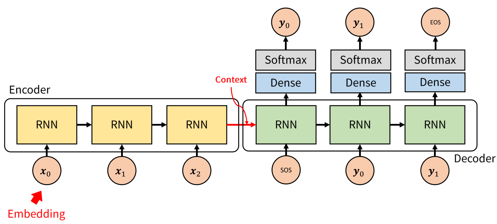
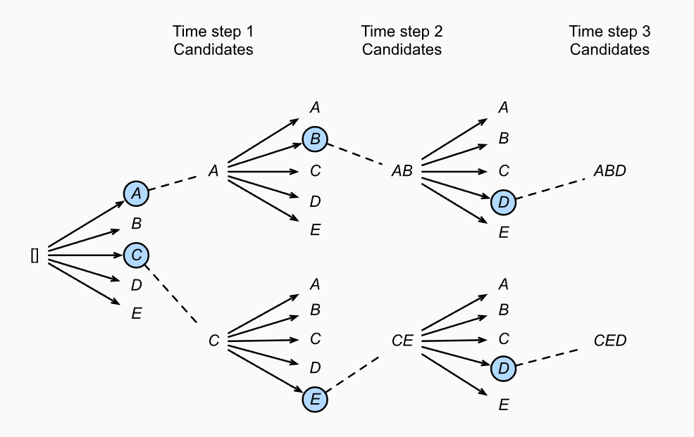

Abstract
- Deep Nueral Network는 복잡한 task에 놀라운 성능을 보여왔지만 sequence에서 sequence를 mapping에서는 task에서는 잘 사용되지 못했습니다.
- 논문에서는 sequence의 구조에 대한 최소한의 가정만으로 학습하는 end-to-end approach를 소개합니다.
Problem Setting
- RNN은 구조상 input과 output의 길이가 같아야 합니다.
- 대부분의 sequence to sequence task에서 이와 같은 길이의 제한은 좋지 못한 성능을 가져옵니다.(ex 기계번역)
Method
Intuition

(Process)
- 먼저 LSTM에 Input sequence를 each time step마다 각각 입력합니다.
- 마지막 토큰인 \(\text{<EOS>}\)이 입력되고 나면 마지막 hidden state인 context vector(\(\bf{v}\))를 얻습니다.
- \(\bf{v}\)를 또 다른 LSTM의 입력으로 사용합니다.
- LSTM은 each time step마다 예측 y를 얻은 뒤 다음 state의 입력으로 활용합니다.
- output sequence는 <EOS>를 만날때 더 이상 출력하지 않습니다.
(context vector란?)
- context \(\bf{v}\)는 input sequence보다 적은 차원을 가지며 모든 input에 대해서 고정된 크기를 가지는 벡터이다.
- \(\bf{v}\)는 input sequence의 핵심적인 의미를 포착합니다.(비슷한 의미를 가지는 문장은 거리가 가깝고 완전 다른 의미라면 거리가 멀다.)
(왜 하필 LSTM?)
- LSTM는 당시에는 긴 문장을 처리할 수 있는(long range temproal dependencies) state of the art였기 때문에 LSTM 위주로 설명되어 있습니다.
- 더 성능이 잘 나온다면 얼마든지 다른 모델도 사용할 수 있습니다.(ex GRU 등등…)
(Note)
- context vector를 lstm에 입력하여 \(\text{<EOS>}\)토큰을 만날때까지 출력하기 때문에 input과 output sequence의 길이는 다릅니다. (장점)
- 고정된 크기의 context vector로 mapping되기 때문에 output sequence를 내놓기 위해 필요한 정보가 사라질 수 있습니다. (단점)
Modeling
(vanila RNN)
\[\begin{aligned} &h_t = \text{sigm}(W^{hx}x_t + W^{hh}h_{t-1})\\ &y_t = W^{yh}h_t \end{aligned}\]- RNN에서 사용되는 수식은 위와 같습니다.
- 이론적으로만 보면 RNN은 길이가 긴 sequence에서도 사용할 수 있습니다.
- 하지만 sequence의 길이가 길어지며 long term dependency 가지는 경우 성능이 좋지 못합니다.
- 따라서 vanila RNN대신 LSTM을 사용합니다.(수식 생략)
(The goal of lstm)
- LSTM의 목적은 왼쪽의 output \(y_1,y_2,\dots,y_{T'}\)에 대한 conditional probability distribution을 얻는 것입니다.
- 즉, each time step t마다 softmax를 통과한 output인 conditional distribution을 모두 메모리에 저장한 뒤 전부 곱하는 것을 의미합니다.
- output은 가장 높은 확률을 가질때의 \(\bf{y}\)라고 생각할 수 있습니다.
- 이렇게 sequence를 출력하는 알고리즘을 exhaustive search라 하며 매우 높은 시간복잡도를 가진다는 단점이 있습니다. > 1.번역을 하는 문제라면 각각의 \(y_1,y_2\dots\)가 가질 수 있는 값들이 dictionary의 크기와 같으며 모든조합에 대해 곱하여 확률분포를 계산해야 합니다.
> 2. 확률분포를 다 계산했다 하더라도 가장 높은 확률을 가지는 \(\bf{y}\)를 탐색해야 하는 search space가 너무 큽니다. - 따라서 다른 알고리즘을 통해서 conditional probability distribution의 max값을 구해야 합니다.
Searching Algorithm
Greedy-search Algorithm
\[\begin{aligned} &\text{until } \hat{y_t} \text{ is not }\text{<EOS>}\\ &\hat{y_t} = \underset{y_t}{\text{argmax}}\,p(y_t|v,y_1,y_2,\dots,y_{t-1})\\ \end{aligned}\]#1 initialize
predict is list
yhat is scalar
#2 predict
while yhat is not <EOS>
yhat = argmax_{y}p(y_t|v,y1,y2,...,y_t-1) #lstm -> softmax -> argmax
predict.append(yhat)- Greedy Algorithm은 Each timestep t에서 얻은 각각의 condional distribution의 max값을 찾는 알고리즘입니다.
- Exhaustive Algorithm과 다르게 search space가 그렇게 크지 않습니다. 따라서 더 적은 시간복잡도를 가집니다.

- 윗 그림은 각각의 timestep t마다 \(y_t\)마다 conditional distribution을 나타낸 그림입니다.
- Greedy Algorithm은 각 t마다 conditional distribution을 maximize하는 토큰만 outputsequence로 출력합니다.
- \(p(y_1,y_2,y_3,y_4) = 0.5 \times 0.4 \times 0.4 \times 0.6 = 0.048\)
(Note)
- search space of Greedy algorithm < searchspace of Exhaustive Algorithm
- 다만 Greedy algorithm의 conditional distribution의 max값을 보장하지 못합니다.(다 계산하고 최댓값을 보는게 아니라 따로따로 max를 계산한걸 가져오기 때문)

- 위의 그림은 t=2에서만 greedy하게 진행하지 않은 경우를 나타냅니다.
- \(p(y_1,y_2,y_3,y_4) = 0.054\)로 오히려 더 높은 확률을 가집니다.
- Greedy Algorithm이 optimal sequence를 보장하지 못한다는 사실을 알 수 있습니다.
Beam-search Algorithm
- 요약하자면 Beam-search는 Greedy Search를 \(K\)개 하는 것입니다.

- Beam-searh Algorithm은 Greedy Algorithm이 optimal sequence를 잘 찾지 못한다는 점을 보완한 알고리즘입니다.
- 처음 \(k\)개의 beam을 통하여 Greedy Search를 수행하는 알고리즘 입니다.
(Beam-Algorithm Process) - 먼저 hyparparameter인 Beamsize(\(k\))를 입력으로 받습니다. - timestep = 1에서 가장 확률이 높은 \(k\)개의 Beam을 선택합니다. - 각각의 Beam에서 계속해서 conditional probability를 계산하며 Greedy하게 탐색합니다. - 각각의 Beam은 \(\text{<EOS>}\)를 만났을때 탐색을 종료하며 candidate에 추가됩니다. - candidate에 있는 모든 Beam에 대해서 score를 계산합니다.
(score) \[\begin{aligned} \frac{1}{L^{\alpha}}\text{log}\,p(y_1,\dots,y_L|{\bf{c}}) = \frac{1}{L^{\alpha}}\sigma_{t=1}^{L}\text{log}\,p(y_t|y_1,\dots,t_{t-1}|{\bf{c}}) \end{aligned}\]- \(L\)은 문장의 길이 \(\alpha\)는 보통 0.75로 긴 시퀀스에 대해서 패널티를 주기위해서 사용합니다.
Experiments
Training Details
- 4-layer가 있는 LSTM, 1000 cell있으며 1000차원의 워드 임베딩
- 문장을 뒤집어서 input으로 사용했음.(자세한 이유x)
- LSTM’s parameters with the uniform distribution between -0.08 and 0.08
- SGD without momentum, 초기 lr = 0.7로 고정. 5 epochs뒤에 lr을 반절로 계속 나누었으며 총 7.5 epochs.
- 각 batch는 128 sequence들로 이루어져 있으며 gradient를 계산했으며 계산한 gradient를 배치사이즈인 128로 나눔.
- gradient에 constraint있음
Experiments Results

- SMT기반의 방법만큼이나 LSTM기반의 방법도 도 좋은 결과를 냄

- context vector를 PCA로 2차원상에 투영한 그림
- 비슷한 의미의 문장은 가깝고 좀 다른 의미의 문장은 거리가 멀다.
Conclusion
- 입력순서를 역전시키니 결과가 잘 나왔다.(그러나 개인적으로 이게 의미있는 결과인지는 모르겠다.)
- LSTM기반의 방법이 생각보다 좋은 성능을 내더라.
- vocabulary가 제한되며 structure에 대한 제한이 없음에도 불구하고 SMT-based system만큼이나 LSTM기반의 방법이 좋은 성능을 보인다.
- 간단하고,쉬운 방법이 SMT기반의 방법을 넘었다. 그러므로 ,계속해서 연구한다면 이러한 접근법이 sequence to sequence 문제에도 충분히 적용가능하다.